免拆芯片提取固件
免拆芯片提取固件
近期做项目，使用芯片夹对 MCU 固件进行了免拆提取。客户很感兴趣，会后负责人特意找到我，想我给他发点相关的资料学习一下。本以为网上很多，搜索了一下都不是很满意，大多讲的固件提取的方式，即没有基础知识介绍，也没有详细的操作步骤。既然没有就自己动手吧，于是便有今天的这篇文章。
为什么要免拆提取呢，直接用热风枪吹下来，用 Flash 编程器读取，它不香吗。免拆，一是懒，吹下来之后还要焊上去，对动手能力要求要高一些；二是，像我们在外面做项目，也不一定有热风枪、电烙铁什么的，出差不可能随声带上吧（下面放一张我出差携带的部分装备）。还有一点，有些情况客户是不允许拆芯片的。

另外还有一点，多数资料都是将如何从 Flash 中提取固件，很少讲怎么从 MCU 中提取固件。下面会介绍一些知识，然后分别演示如何从 Flash 和 MCU 免拆提取固件。
基础知识
芯片封装与针脚定义
使用芯片夹可以实现 SOP、QFP 封装等针脚外露的芯片免拆固件提取，而对 QFN、BGA 等封装方式则无能无力。
SOP8/16
SOP(Small Out-Line Package,小外形封装) 针脚从封装两侧引出呈海鸥翼状(L 字形)，一般用于针脚不太多的芯片上 。SOP8/16 封装的 Flash 在路由器、摄像头等 IOT 设备厂较为常见。针脚有8根或16根，且一个角上有小圆点（每个芯片都有一个小圆点，小圆点所在的位置是第一针脚,然后逆时针排布第二针脚,第三针脚等）,型号代码一般是24或25开头。SOP8/16 SPI Flash 一般的针脚定义如下。
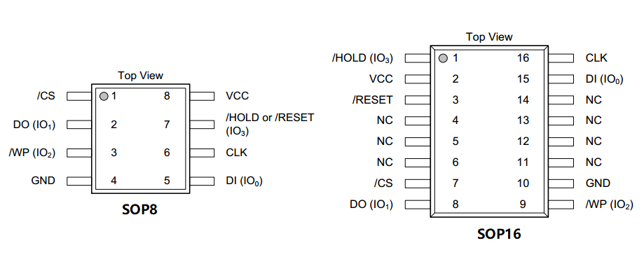
| 引脚 | 定义 |
|---|---|
| /CS | 片选 |
| DO | 数据输出 |
| /WP | 写保护 |
| GND | 电源地 |
| VCC | 电源正极 |
| /HOLD | 输入保持 |
| /RESET | 复位 |
| CLK | 时钟 |
| DI | 数据输入 |
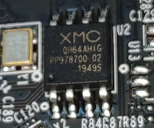
QFP
QFP(Plastic Quad Flat Package，方型扁平式封装技术）针脚从四个侧面引出呈海鸥翼(L)型。实现的芯片针脚之间距离很小，管脚很细，一般大规模或超大规模集成电路采用这种封装形式，其针脚数一般都在64以上。在小型IOT设备中可作为主控或协处理器。下图中的芯片就是采用 QFP 封装。
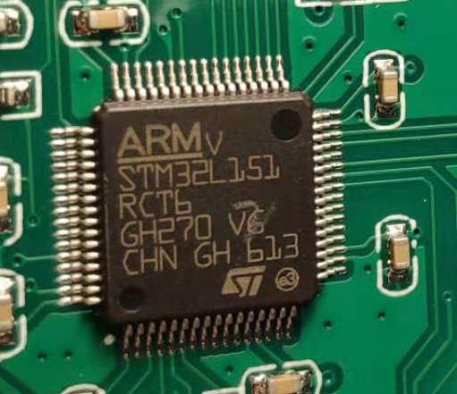
此类封装由于针脚数不固定，没有统一标准，一般由厂商自行定义，引脚定义详见芯片手册。
GBA
BGA(Ball Grid Array Package,球栅阵列封装) 封装的 I/O 端子以圆形或柱状焊点按阵列形式分布在封装下面，具有更小的体积，更好的散热性能和电性能。由于 I/O 端子在封装下方，提取固件则需要使用
BGA返修台拆卸下来读取，不能实现免拆提取。BGA 封装一般用于 CPU 和大容量存储。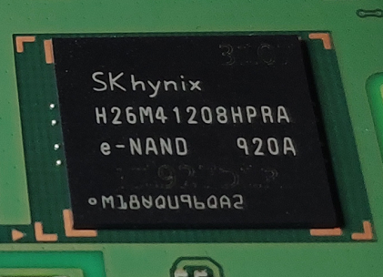
此类封装同 QFP 封装的芯片一样，引脚定义需看看相应的芯片手册。
芯片夹
一般使用的夹子有三种。第一种是SOP8/16脚测夹，常用于 SPI 闪存的固件提取；第二种是芯片通用测试夹测试钩子,常用于SOP QFP 封装芯片的固件提取或协议分析；第三种是ECU 探针，多用于汽车 ECU 固件提取。
SOP8/16脚测夹
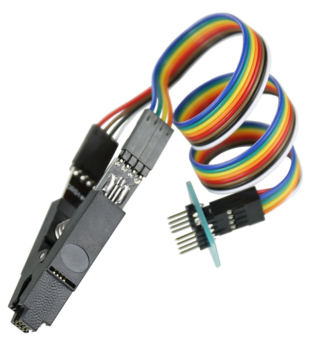
SOP8/16脚测夹适用于 SOP8 以及 SOP16 封装的芯片。芯片通用测试夹测试钩子
芯片通用测试夹测试钩子此类钩子淘宝上有好几种在售。下图的这种，只适用于芯片针脚较少的芯片，如采用 SOP8 封装的芯片。勾式是单钩钩取，扁式是双钩夹取。这种的价格相对便宜一些。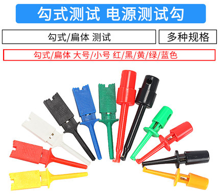
下面这种夹子更细，能够用在有更多更细的针脚芯片上，如 QFP 封装的 MCU。这类夹子较上面的这种要贵一些。

这类夹子都比较小，当需要夹连续的针脚时有一定的困难，需要反复尝试。另外由于没有支撑，可能刚夹上就被弹开了，这种情况就可以用ECU 探针来连接。
ECU 探针
ECU 探针常用于汽车行业，是动力调教等玩车搞车一族的必备单品。当然其他的芯片也可以用它来进行固件提取。这类由于带有支架，使用时只需要把探针搭在对应的芯片针脚上。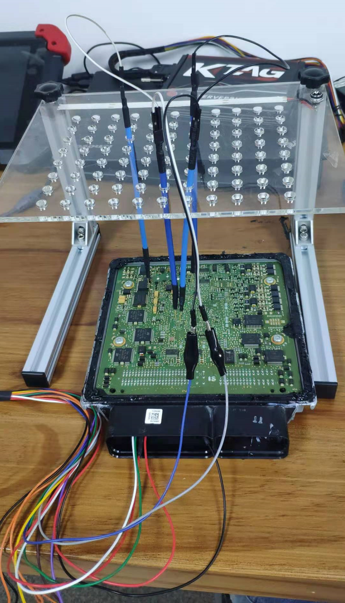
从 Flash 中提取固件
免拆读取 Flash，一般读取 SOP8 封装的 SPI Flash较多，使用SOP8/16脚测夹较为方便。提取所需的软硬件如下。
软件
- flashrom: flashrom 是一个开源的跨平台的烧录工具, 提供了不少的芯片支持和编程器支持. 用于识别、 读取、写入、 验证和擦除各种 Flash 芯片。
硬件
- 测试夹：SOP8/16脚测夹，上文有详细介绍。
- 编程器：CH341A 编程器/树莓派/CJMCU FT232H等(任选一)
这里我用树莓派做演示，之前用过 CH341A 编程器 提取的速度比较慢，建议使用树莓派或 FT232H 等调试器。
安装flashrom
使用 apt 直接安装。
1
sudo apt-get intall flashrom
启用树莓派的 SPI
使用树莓派的配置命令
rasp_config，依次选择 “Interfacing Options” -> SPI -> YES 启动树莓派的 SPI 接口。加载 SPI 模块
要使用树莓派的 SPI 接口还需要加载 spi_bcm2835 与 spidev 模块。
1
2pi@raspberrypi:~ $ sudo modprobe spi_bcm2835
pi@raspberrypi:~ $ sudo modprobe spidev接线
首先找到板子上的 Flash，然后找到 Flash 的 datasheet 中对引脚的定义与树莓派的引脚定义，根据 flashrom 上给出的使用说明进行连接，如下图。
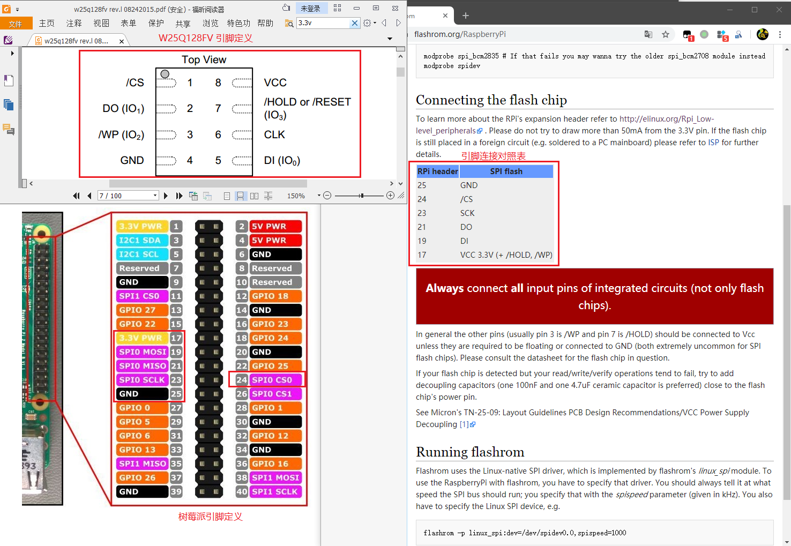
| 树莓派引脚 | SPI Flash 引脚 |
|---|---|
| 25 | GND |
| 24 | /CS |
| 23 | SCK |
| 21 | DO |
| 19 | DI |
| 17 | VCC 3.3V (+ /HOLD, /WP) |
一般情况下 SPI Flash 的 VCC、/HOLD、/WP 都需要连接树莓派的 3.3V 的 VCC 上。
按照上表进行接线，连接好的效果图如下。使用编程器、调试器等设备时接线也类似。

提取
接好线后，使用 flashrom 提取固件。
-p选项指定使用的设备类型，这里使用了树莓派的 spi 接口，并设定读写速度；-r选项指定读取后保存的路径；从文件中写回 flash 所用到的选项为-w。如下成功提取固件并保存到了当前目录的 w25q_rasp.bin 文件中了。1
2
3
4
5
6
7pi@raspberrypi:~ $ flashrom -p linux_spi:dev=/dev/spidev0.0,spispeed=1000 -r w25q_rasp.bin
flashrom on Linux 4.19.57-v7+ (armv7l)
flashrom is free software, get the source code at https://flashrom.org
Using clock_gettime for delay loops (clk_id: 1, resolution: 1ns).
Found Winbond flash chip "W25Q128.V" (16384 kB, SPI) on linux_spi.
Reading flash... done.
从 MCU 中提取固件
从 Flash 中提取固件较为常见，但有些情况下固件被没有存储在外置的 Flash 上，而是在 MCU 的内置 Flash 中。这时需要通过调试接口（SWD/JTAG等）对固件进行提取，也可以进行动态调试。
对 MCU 上固件进行提取，首先需要根据芯片手册，找到调试接口。有些情况下，调试接口可能会引出。下图是我曾经研究过的一款智能设备，板子上引出 SWD 调试接口。
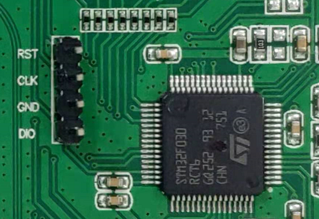
但随着硬件厂商对安全的重视，MCU 调试接口被引出的情况越来越少。但遇到这种情况时，可以尝试直接操作芯片针脚。下面演示使用芯片测试夹从 MCU 中提取内置固件。提取所需的软硬件如下。
- 硬件
- 测试夹：芯片通用测试夹测试钩子。
- FT232H：多功能 USB to JTAG SWD/UART/FIFO SPI/I2C 模块。也可以使用 JLink、STLink 等调试器。
- 软件
- OpenOCD: OpenOCD（Open On-Chip Debugger)是一个开源的片上调试器，旨在提供针对嵌入式设备的调试、系统编程和边界扫描功能，可以与 GDB 配合进行动态调试。
以下以某 IOT 设备 MCU (STM32f030 RCT6) 为例使用测试夹通过 OpenOCD 提取固件。STM32f030 RCT6采用 QFP 64 封装。
OpenOCD 安装与简单使用
使用 apt 直接安装。
1
sudo apt-get install openocd
有特殊需求时，也可以进行源码安装。部分芯片厂商对 OpenOCD 进行了适配，如新唐的 OpenOCD-Nuvoton。
OpenOCD 运行需要两个配置文件，第一个是调试器的配置文件，第二个是目标芯片的配置文件。
1
openocd -f interface/ft232h-module-swd.cfg -f target/stm32f0x.cfg
OpenOCD 运行之后，使用 telnet 连接本地的 4444 端口与芯片进行交互。连接后，输入 help 查看支持的命令，不同的芯片支持的命令有所不同。一般而言提取固件使用
dump_image命令。GDB 动态调试监听见本地的 3333 端口，进入GDB 后通过
target remote localhost:3333连接。连线
根据芯片丝印
STM32f030 RCT6下载相应的芯片手册。在手册中找到调试接口，此芯片采用 SWD 进行调试。STM32f030 RCT6有 64 个针脚，对应下图 46 号针脚 SWDIO，49 号针脚 SWCLK，63 号针脚 VSS，7 号针脚 RESET。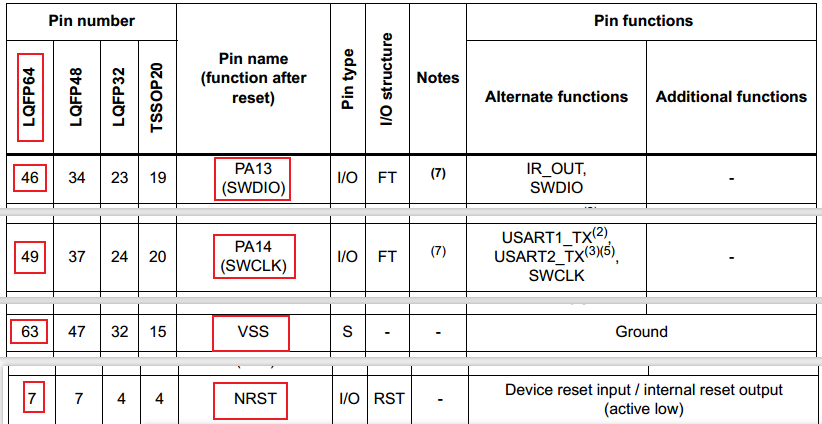
然后，使用已连接杜邦线的测试夹连接SWD 接口，依次为 7 号针脚（RESET）、 46 号针脚（SWDIO）、 49 号针脚（SWCLK）、 63 号针脚（VSS） ，连接之后如下图。
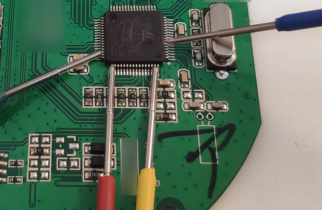
然后，按下图连接 FT232H。注意 AD2(DO) 需要串联一个电阻，然后与 AD1(DI) 合并组成 SWDIO。

最后将 FT232 H 通过 USB 接口连接电脑。上面的忘记拍全景图了，放张读取其他的芯片的作为参考。连接好的效果图类似下图。

查看芯片手册找到固件所在位置
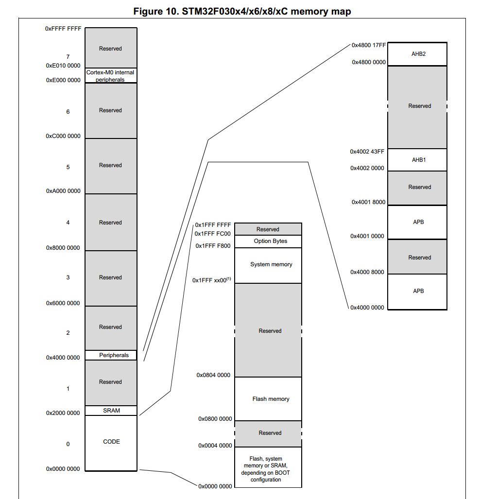
根据芯片手册的内存映射（如上图） dump固件。固件地址在 0x0000 0000 - 0x2000 0000 中，0x0000 0000 - 0x0004 0000 为 Flash Memory/System Memory/SRAW depending on BOOT configuration、0x0804 0000 - 0x0800 0000 为 Flash memory、0x1FFF xx00 - 0x1FFF FFFF 为 System memory等。
- System Memory: 从系统存储器启动，这种模式启动的程序功能是由厂家设置的。一般来说，这种启动方式用的比较少。系统存储器是芯片内部一块特定的区域，STM32 在出厂时，由 ST 在这个区域内部预置了一段 BootLoader， 也就是我们常说的 ISP 程序， 这是一块 ROM，出厂后无法修改。一般来说，我们选用这种启动模式时，是为了从串口下载程序，因为在厂家提供的 BootLoader 中，提供了串口下载程序的固件，可以通过这个 BootLoader 将程序下载到系统的 Flash 中。
- Flash Memory：是 STM32 内置的 Flash，一般我们使用 JTAG 或者 SWD 模式下载程序时，就是下载到这个里面，重启后也直接从这启动程序。
- SRAW：内置 SRAM，既然是 SRAM，自然也就没有程序存储的能力了，这个模式一般用于程序调试。假如我只修改了代码中一个小小的地方，然后就需要重新擦除整个 Flash，比较的费时，可以考虑从这个模式启动代码（也就是 STM32 的内存中），用于快速的程序调试。
由上可知，固件在 Flash Memory 中，起始地址为 0x8000000 ，大小为 x40000。
提取固件
首先运行 OpenOCD，连接成功的输出如下。
1
2
3
4
5
6
7
8
9
10
11
12
13
14
15
16
17
18
19
20root@kali:/usr/share/openocd/scripts# openocd -f interface/ft232h-module-swd.cfg -f target/stm32f0x.cfg
Open On-Chip Debugger 0.10.0
Licensed under GNU GPL v2
For bug reports, read
truehttp://openocd.org/doc/doxygen/bugs.html
adapter speed: 1000 kHz
Info : FTDI SWD mode enabled
swd
adapter speed: 1000 kHz
adapter_nsrst_delay: 100
none separate
cortex_m reset_config sysresetreq
Info : clock speed 1000 kHz
Info : SWD DPIDR 0x0bb11477
Info : stm32f0x.cpu: hardware has 4 breakpoints, 2 watchpoints
Polling target stm32f0x.cpu failed, trying to reexamine
in procedure 'stm32f0x_default_examine_end'
in procedure 'mmw' called at file "target/stm32f0x.cfg", line 65
in procedure 'mrw' called at file "mem_helper.tcl", line 25
at file "mem_helper.tcl", line 6然后使用 telnet 连接 locahsot:4444 端口 dump 固件。首先输入命令
halt中断代码执行，然后使用dump_image 导出固件的文件名 起始地址 导出的数据长度导出固件。固件的起始地址和大小，我们在上一步已经获取到了。使用命令dump_image flash.bin 0x8000000 0x40000提取固件。1
2
3
4
5
6
7
8root@kali:~# telnet 127.0.0.1 4444
> halt
target halted due to debug-request, current mode: Thread
xPSR: 0x21000000 pc: 0x0801a8de msp: 0x20007990
> flash list
{name stm32f1x base 134217728 size 0 bus_width 0 chip_width 0}
> dump_image flash.bin 0x8000000 0x40000
dumped 262144 bytes in 3.812859s (67.141 KiB/s)
然而，并不是每一个 QFP 封装的 MCU 都能够免拆提取出固件 ，现在不少芯片开启了代码读取保护（CRP/RDP）。CRP 这一机制就是为了防止固件被提取而设计的。下图是 STM32L151 手册中关于代码读保护的介绍。
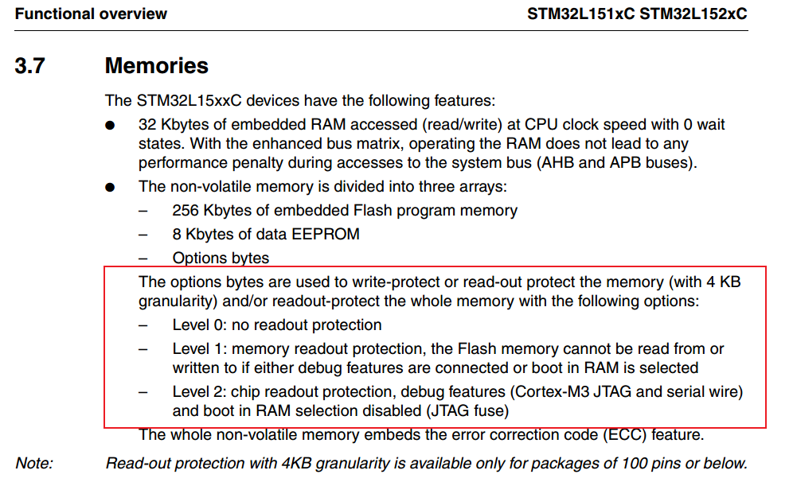
另一方面，此方法可以应用在 IOT 安全测试中，用于验证 CRP 是否开启。
另外，使用 ECU 探针读取固件方式与使用芯片通用测试夹测试钩子类似。唯一的差异是探针是搭在针脚上，而不是夹在针脚上。
以上我是近两年对 IOT 设备硬件的一些粗浅认识，有什么不当之处，还请大佬们不吝赐教。
参考
本文首发于安全客